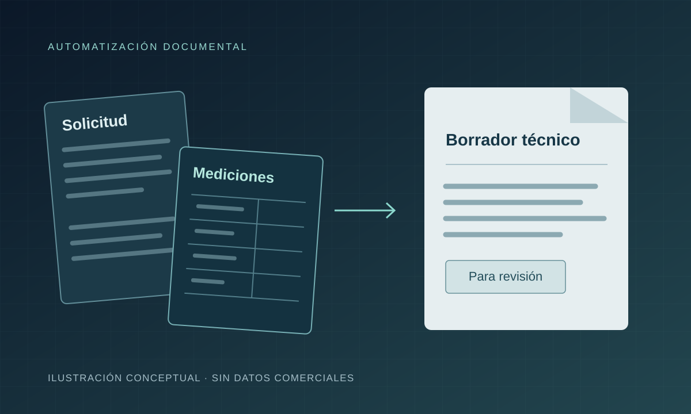

VALIDACIÓN DE ENTRADAS · GENERACIÓN DOCUMENTAL
Preparación de borradores de ofertas técnicas
Prototipo probado · desarrollo asistido por IA
Diseño funcional y pruebas de un prototipo Python que relaciona solicitudes estructuradas y mediciones para generar borradores técnico-comerciales revisables.
Ver el ejemplo sintético ↓
El problema
Una solicitud, una hoja de mediciones y una plantilla documental describen el trabajo de maneras distintas. Asociar conceptos, cantidades y unidades exige comprobar campos obligatorios y correspondencias ambiguas antes de trasladar datos a un borrador.
Qué hice
- Definí requisitos funcionales y preparé especificaciones del flujo documental.
- Participé en iteraciones de diseño, integración y desarrollo asistido por IA.
- Realicé pruebas de validación de entradas y contrasté los documentos generados con los datos de origen.
Cómo lo abordé
Revisar las entradas antes de generar el documento y conservar la relación con su fuente. Python y Tkinter soportaron la aplicación de escritorio; Excel aportó las mediciones y Word las plantillas del borrador. La importación directa de correos se estudió como posible evolución, sin presentarla como función terminada.
- 01
Entradas
Solicitud estructurada y hoja de mediciones.
- 02
Validaciones
Obligatorios, unidades y correspondencias.
- 03
Borrador
Documento con datos de origen revisados.
- 04
Revisión humana
Comprobación técnica y comercial antes de su uso.
Una unidad ausente y una asociación ambigua requieren revisión.
Ejemplo inventado, sin clientes, contactos, precios ni condiciones económicas. Las cantidades se muestran únicamente para explicar la validación.
| Entrada ficticia | Comprobación | Tratamiento ilustrativo |
|---|---|---|
| Solicitud: revisión de un modelo | La actividad solicitada tiene una descripción. | Relacionarla con la medición propuesta. |
| Medición: cantidad 2; unidad sin indicar | Falta un dato obligatorio. | Solicitar la unidad antes de generar el borrador. |
| Descripción genérica: «apoyo técnico» | Hay más de una correspondencia posible. | Pedir revisión; no elegir una asociación por defecto. |
| Entradas aclaradas y revisadas | Obligatorios y correspondencias resueltos. | Generar un borrador sujeto a revisión humana. |
El resultado sería un documento revisable vinculado a las entradas comprobadas, no una oferta aprobada ni un compromiso comercial.
Comprobaciones y alcance
Qué comprobé
- Pruebas automatizadas e iteraciones de verificación de salidas del prototipo.
- Comprobación de campos obligatorios y correspondencias antes de generar documentos.
- Contraste de borradores con la información de origen.
Límites y estado
Prototipo diseñado y probado con desarrollo asistido por IA. No se afirma una implantación completa en producción. La generación de un borrador no sustituye la aprobación técnica o comercial.
Criterio transferible
Validar las entradas y sus correspondencias es tan importante como generar el documento; la revisión humana sigue siendo parte del proceso.
Caso anonimizado. Solo se muestran ilustraciones originales y ejemplos inventados; no documentación ni datos de clientes.